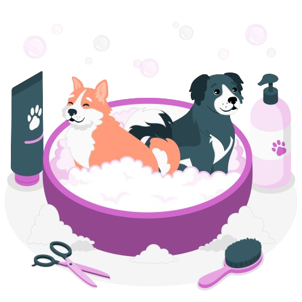

Garanta uma vida longa e cheia de alegria para seu melhor amigo
Unindo paixão e cuidado, promovemos a saúde e felicidade dos seus melhores amigos. Bem-vindo a DoutorPet o lugar onde o amor pelos animais se transforma em atendimento excepcional.
Marque uma Consulta Conheça nossa ClínicaCuidado Veterinário de Qualidade
Conheça a Dra. Carolina Oliveira, a personificação do cuidado veterinário de qualidade. Com uma paixão inabalável pelos animais e uma expertise incomparável, a Dra. Oliveira vai além do convencional, dedicando-se a proporcionar um atendimento excepcional a cada paciente de quatro patas. No consultório da Dra. Carolina, a qualidade é a palavra-chave. Cada diagnóstico é minuciosamente elaborado, e cada tratamento é personalizado para atender às necessidades individuais de cada animal. Sua abordagem compassiva e sua habilidade técnica são a base de um serviço que transcende as expectativas, garantindo não apenas a saúde, mas também a felicidade duradoura dos nossos amigos peludos. Seja para check-ups de rotina, emergências inesperadas ou acompanhamento especializado, confie na Dra. Carolina Oliveira para oferecer cuidados veterinários excepcionais que estabelecem um padrão elevado de qualidade e carinho. Seus animais merecem o melhor, e a Dra. Carolina está aqui para garantir que recebam exatamente isso.
- Exames físicos abrangentes.
- Atualização de vacinas.
- Verificação de parasitas.
- Controle de pulgas e carrapatos.
- Desparasitação regular.
- Orientação sobre nutrição e cuidados gerais.
- Análises laboratoriais (sangue, urina, etc.).
- Radiografias e exames de imagem.
- Tratamento de infecções e doenças crônicas.
- Esterilização (castração) de animais.
- Cirurgias de emergência.
- Procedimentos ortopédicos e outros.
- Limpeza dental
- Extração de dentes quando necessário.
- Tratamento de doenças periodontais.
- Tratamento de ferimentos.
- Atendimento rápido para casos urgentes.
- Estabilização de pacientes críticos.
- Orientação sobre comportamento animal..
- Dicas de cuidados em casa.
- Sugestões para uma dieta balanceada.
.png)
Venha conferir nosso Petshop e Fármacia
Convidamos você a explorar nosso universo dedicado aos cuidados e mimos para seus queridos animais de estimação. Em nosso pet shop, descubra uma seleção cuidadosamente curada de produtos premium, desde brinquedos irresistíveis até acessórios de última geração. Temos tudo para manter seus amigos de quatro patas felizes e saudáveis. Além disso, adentrem nossa farmácia veterinária, onde a saúde e o bem-estar dos seus pets são prioridade absoluta. Aqui, oferecemos uma ampla gama de medicamentos, suplementos e produtos de cuidados especializados, sempre sob a supervisão da Dra. Carolina Oliveira, nossa experiente veterinária. Venha conferir pessoalmente a qualidade e o carinho que dedicamos a cada detalhe. Seus pets merecem o melhor, e estamos aqui para garantir que encontrem tudo o que precisam para uma vida plena e feliz. Visite nosso pet shop e farmácia - o destino perfeito para quem ama seus animais tanto quanto nós!
Ficou alguma dúvida?
Quais são os horários de atendimento da clínica?
Resposta: Nossos horários de atendimento são de segunda a sexta-feira, das 8h às 18h, e aos sábados, das 9h às 13h. Estamos comprometidos em fornecer flexibilidade para atender às necessidades dos nossos clientes e pacientes.
Como posso agendar uma consulta para o meu animal de estimação?
Resposta: Agendar uma consulta é fácil! Basta ligar para a clínica durante o horário de expediente, e nossa equipe terá prazer em encontrar o melhor horário para você. Também oferecemos a opção de agendamento online em nosso site.
Vocês atendem casos de emergência?
Resposta: Sim, nossa clínica oferece atendimento de emergência. Se o seu animal precisar de cuidados imediatos fora do horário de expediente, entre em contato conosco para obter orientações e assistência.
Quais serviços veterinários vocês oferecem?
Resposta: Oferecemos uma variedade de serviços, incluindo consultas de rotina, tratamento de doenças, cirurgias, odontologia veterinária, serviços de emergência, entre outros. Consulte nosso site ou entre em contato para obter informações detalhadas sobre nossos serviços.
Vocês têm um pet shop e farmácia na clínica?
Resposta: Sim, contamos com um pet shop onde você pode encontrar uma seleção de produtos de alta qualidade para seus animais de estimação. Além disso, possuímos uma farmácia veterinária bem abastecida, supervisionada pela Dra. Carolina Oliveira, para atender às necessidades de saúde dos seus pets.
Quais medidas de segurança estão em vigor na clínica?
Resposta: Implementamos rigorosos protocolos de segurança para garantir o bem-estar de nossos clientes, suas famílias e nossos funcionários. Isso inclui medidas como limpeza regular, distanciamento social e uso de equipamentos de proteção.